Medical Affairs Consulting & Coaching
Bożena Polok
Senior medical affairs expertise for teams that need it — by project, on an interim basis, or through coaching.
Geneticist by training, medical affairs leader by trade: 15 years building teams, launches and patient programs across Europe and the Middle East — in ophthalmology, immunology, pain and beyond.
Today: Associate Global Medical Director and Patient Ambassador EMEA at Santen.
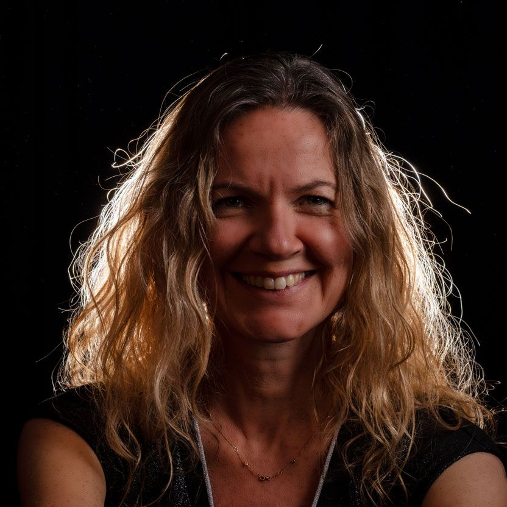
About
From a zebrafish lab in Sion to medical affairs across Europe
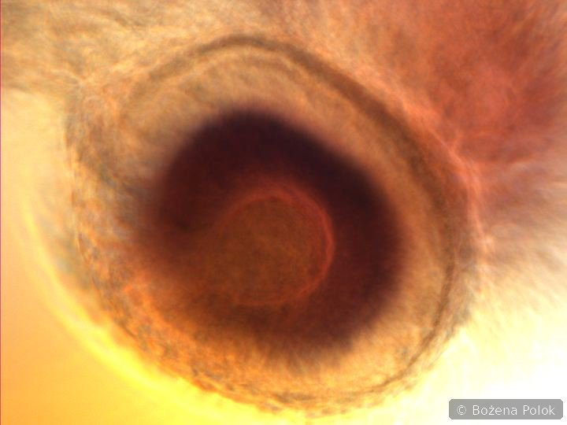
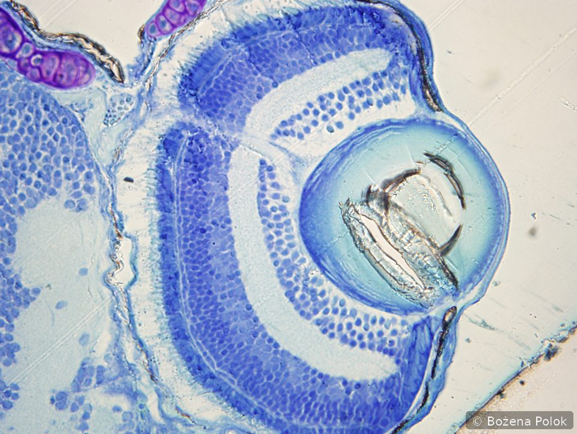
I grew up moving between countries — my parents were both nuclear physicists — living in the Netherlands and Switzerland, then eight years in Germany and, for the past two decades, Switzerland again.
At 13, a book about genetics decided the rest: I wanted to work on hereditary disease. By the end of my biotechnology degree at the Jagiellonian University in Kraków, I was already looking for lab benches wherever I could find them.
My PhD (University of Freiburg) took me through cancer research and molecular cardiology before I found the model that held my attention: zebrafish. In 2006, Prof. Daniel Schorderet invited me to Sion to build one of Switzerland's first zebrafish labs and lead my own research group on hereditary eye disease.
Industry found me almost by accident, through a microscopy role at Olympus Suisse in 2011. Medical roles at UCB, Sanofi and Allergan (AbbVie) followed, across immunology, hematology, nephrology, pain and eye care.
Today I lead Medical Affairs at Santen across the Nordics & Baltics, UK & Ireland, DACH and the Middle East, and recently covered France on a four-month interim mission. Alongside that, I'm Santen's Patient Ambassador for EMEA, leading myopia initiatives with local patient organizations.
Swiss and Polish, I work across five languages.
Polish (mother tongue) · French & English (full professional) · German (full professional) · Italian (intermediate)
“Whenever I found out anything remarkable, I have thought it my duty to put down my discovery on paper, so that all ingenious people might be informed thereof.”
— Antonie van Leeuwenhoek, microscopist, letter of 12 June 1716Curiosity, then the duty to share what you find: a microscopist's creed three centuries ago, and still the heart of good medical affairs.
Services
How I can help
Three ways to work together, each built on what I've done in-house across seven therapeutic areas.
Medical affairs consulting
Project-based or interim support with launch readiness, medical plans, advisory boards, KOL engagement and publication strategy — senior expertise without a full-time hire.
Patient programs & advocacy
Designing and running patient-facing initiatives — awareness days, peer-support and physical-activity programs, patient-story campaigns — and supporting patient-led initiatives with structure, ideas and project management, alongside the associations driving them.
Coaching
One-to-one coaching for medical affairs professionals building a career in the field, and for managers leading their first team, launch or advisory board.
What I bring
Therapeutic areas: Ophthalmology · Immunology · Rheumatology · Gastroenterology · Hematology · Nephrology · Pain
Strategy & team leadership
Building and scaling regional medical affairs functions — most recently growing a team from two people to eleven.
Launches & lifecycle
Four recent ophthalmology launches in glaucoma, dry eye and pediatric myopia, one of them global — from evidence generation to affiliate rollout.
Scientific & publication strategy
Publication plans, and turning clinical evidence into strategy, materials and training that cross-functional teams can actually use.
KOLs & patients
Advisory boards that lead to publications, plus programs built from scratch: Fit & Fun at UCB, Save the Case at Allergan, Kids Day at Santen.
Bench-to-bedside thinking
A research career in zebrafish genetics and hereditary eye disease that still shapes how I read a clinical dossier.
Many markets, five languages
Nordics & Baltics, UK & Ireland, DACH, the Middle East and France — worked in Polish, French, English, German and Italian rather than through a translator.
Planning a launch, an advisory board or a patient initiative?
Let's talkExperience
Fifteen years in industry, eleven years of research before it
Industry — 2011 to present
Associate Global Medical Director
Regional medical affairs leadership: EMEA medical plans, evidence-generation strategy, launch readiness, and cross-functional and affiliate partnership — with a therapeutic focus on glaucoma, dry eye and myopia.
- Grew the team from two people to eleven, including medical managers leading their own local teams
- Manages a multi-million-euro budget across the region
- Led four ophthalmology launches across the region, including one with global scope
- Covered France ad interim on a four-month mission, including local regulatory submissions for a new product
- As Patient Ambassador EMEA, leads myopia initiatives with local patient organizations
- Created the team's annual Kids Day patient-awareness event and contributed to "No Limits: The Story of Roland," a Santen patient-story initiative
Senior Medical Advisor, Eye Care
Medical strategy and publication plans for the eye-care portfolio; advisory boards, investigator meetings, grants & sponsorships — with a therapeutic focus on retina and glaucoma.
- Ran the expert advisory board that led to Munk et al. (2022) on OCT biomarkers to guide treatment choice in diabetic macular edema
- Created "Save the Case," a hybrid scientific-exchange format pairing an in-person practice discussion with an online audience
- Helped secure a Swiss price increase for an established product, working closely with regulatory colleagues
Medical Manager & MSL, Established Products
Medical and publication plans across hematology, nephrology and pain; advisory board and medical event support; KOL and patient-organization engagement.
Medical Science Liaison, Immunology
Scientific exchange with HCPs, clinical study and site support, internal training.
- Created "Fit & Fun," educational and physical-activity events for people living with rheumatologic conditions
Microscopy Specialist & Area Sales Manager
Scientific and technical consulting in microscopy; custom imaging solutions; training and workshops. My first industry role after eleven years of research — and where I first learned to sell.
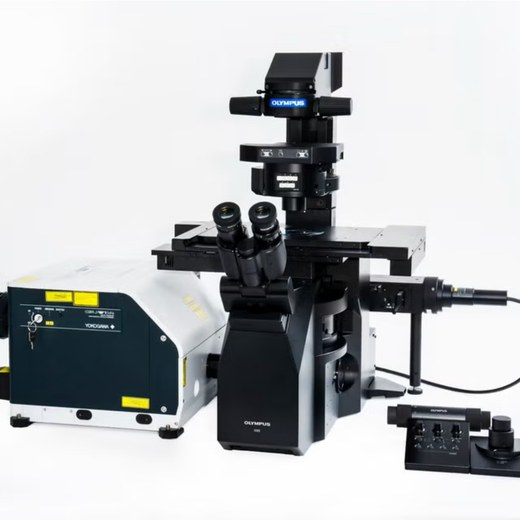
Research career & education, 2000–2011
Research — 2000 to 2011
Senior Postdoc, Scientific Advisor
Established a zebrafish research platform; supervised students and technical staff.
Short-Term Postdoc
Postdoc & Zebrafish Group Principal Investigator
Invited by Prof. Daniel Schorderet to build one of Switzerland's first zebrafish labs and lead my own research group.
- Established the zebrafish facility and organized the first Zebrafish Swiss Meeting
- Collaborated with Hôpital Jules Gonin, Lausanne on hereditary ophthalmic disease, linking clinical and family studies to experimental models
PhD, Molecular & Developmental Biology
Began in cancer research (Marburg), moved through molecular cardiology (Frankfurt), then pivoted to zebrafish developmental biology under Prof. Wolfgang Driever in Freiburg from 2002.
- Selected as one of 12 international scientists for the Marine Biological Laboratory's zebrafish course, Woods Hole, USA (2004)
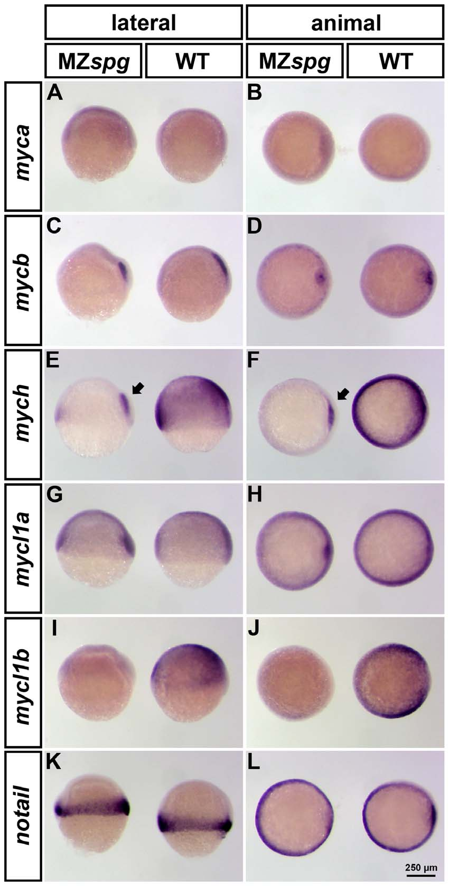
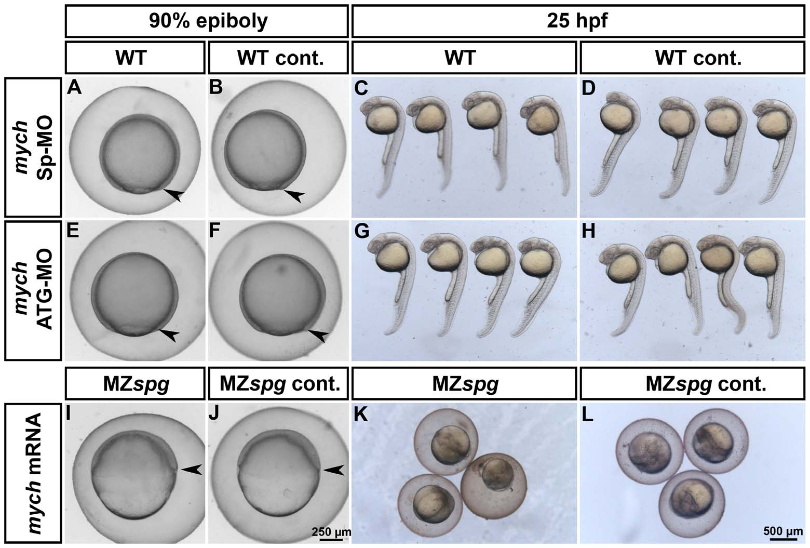
Education
First degree
Five-year integrated diploma/MSc program, foundational training in molecular biology that built toward a research career in hereditary-disease genetics. Thesis carried out at the Institute of Biophysics, using EPR (electron paramagnetic resonance) to differentiate viral from bacterial meningitis in children. On a scholarship during the program, selected for a year as a training student at the Max Planck Institute, Martinsried, establishing new protocols for chicken embryo-derived cell cultures.
Publications & Media
From the bench to the clinic
A recent paper that grew out of my medical affairs work, then ten peer-reviewed papers from the research years, largely on eye disease genetics in zebrafish.
From my medical affairs work
The Role of Intravitreal Corticosteroids in the Treatment of DME: Predictive OCT Biomarkers
Grew out of an expert advisory board I ran at Allergan: which OCT findings help decide between a corticosteroid implant and anti-VEGF therapy in diabetic macular edema.
From the research years
-
Mutations in CNNM4 cause recessive cone-rod dystrophy with amelogenesis imperfecta
-
Pou5f1/Oct4 promotes cell survival via direct activation of mych expression during zebrafish gastrulation
-
Bigh3 is upregulated in regenerating zebrafish fin
Show 7 more research papers
-
Zebrafish Pou5f1-dependent transcriptional networks in temporal control of early development
-
Report of the European Zebrafish Principal Investigator Meeting, Padua, Italy
-
Essential role for Pbx1 in corneal morphogenesis
-
Mutation in the human homeobox gene NKX5-3 causes an oculo-auricular syndrome
-
Characterization of pip5k3 fleck corneal dystrophy-linked gene in zebrafish
-
Inversin, the gene product mutated in nephronophthisis type II, functions as a molecular switch between Wnt signaling pathways
-
Generation of nitric oxide as a predictive parameter in medicine
TV & press coverage, 2008–2009
Media
Television
- TSR — "New gene discovery in IRO"
- TSR — "Visually impaired: glimmers of hope" (in French, opens in a new tab)
Video not currently available online — browse the RTS archive catalogue (TSR was renamed RTS in 2010) at rts.ch/archives (opens in a new tab).
Press
- swissinfo.ch — "Importante découverte ophtalmique à Sion" (in French, opens in a new tab)
- Date unknown: RTS — "Maladie génétique: découverte sédunoise" (in French, opens in a new tab)
Further coverage of the same IRO (Sion) genetic-disease research.
Off the clock
What the bench, the barre and the microscope have in common
All are, in their own way, an exercise in close attention — to a specimen, a frame, a pattern of movement, or a student's next step.
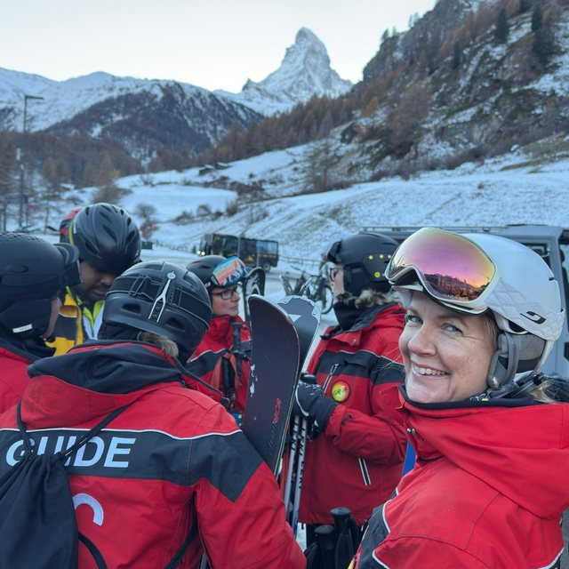
Zebrafish & genetics
The model that set my scientific path, after an unannounced letter to Prof. Wolfgang Driever's lab in Freiburg. It led to my own research group in Sion and a place on the selective zebrafish course at Woods Hole.
Microscopy
A job at Olympus Suisse turned into a lasting fascination. Today I collect historical microscopes and keep a small private lab of my own, still happiest when there is something new to look at up close.
Ballet
Professional ballet school alongside my science baccalaureate, then teaching children and performing with semi-professional companies. Dance was my passion and my way of expressing myself — the natural counterweight to demanding analytical work.
Photography
A surprising gift from my Olympus years — colleagues there taught me to shoot on Olympus cameras, and the habit of composing a frame stayed with me long after I left the company.
Mentoring
I mentor students exploring a path into biology, genetics or medicine — the same encouragement I once got from a book at 13, and later from Professor Driever, who spent nearly an hour on the phone with a stranger asking about zebrafish.
Through my lens
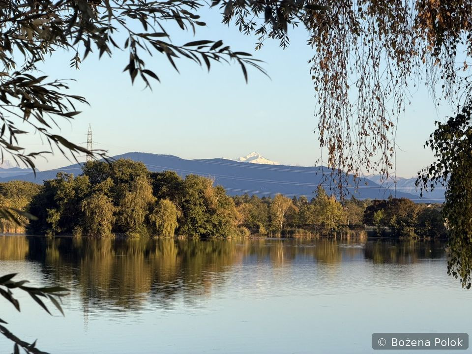
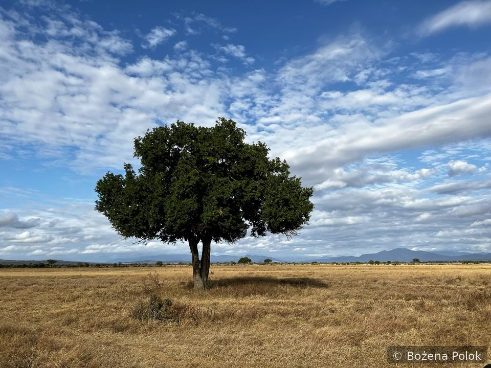
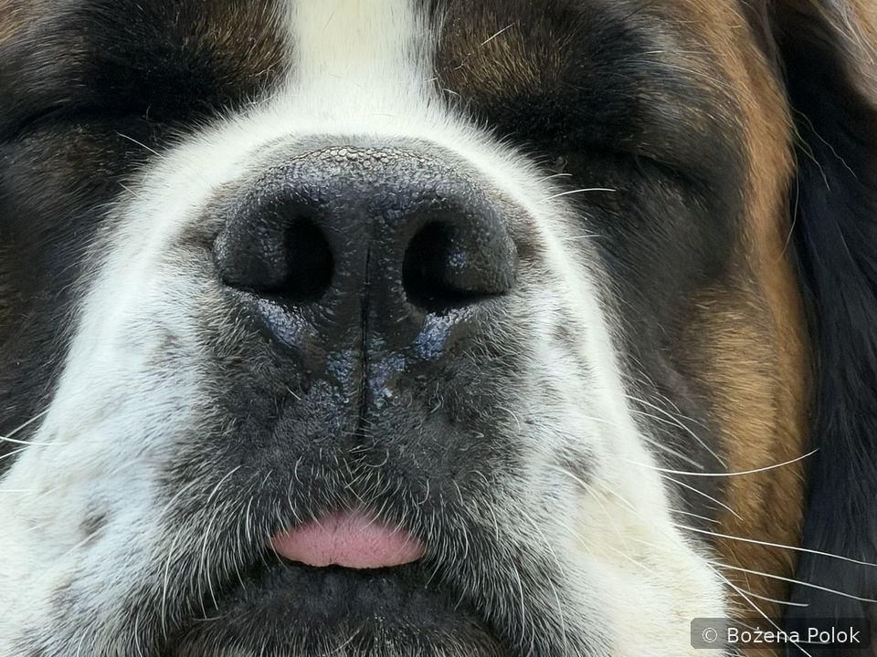
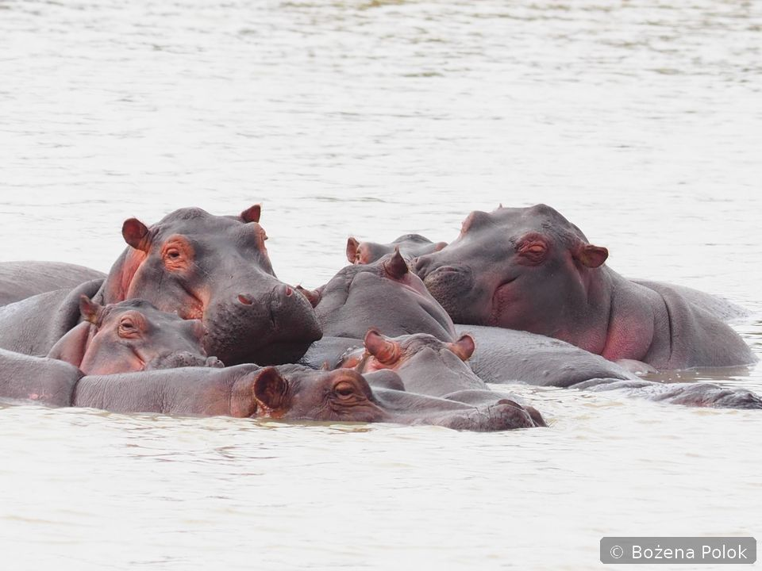
All photographs © Bożena Polok. All rights reserved — no reuse without written permission.
Lending my eyes on the slopes
As a volunteer guide with GRSA, a Swiss Romandy group for skiers who are blind or have low vision. Many of the skiers I've guided have become friends; they've taught me at least as much about courage and trust.
Microscopy for school classes
Between 2016 and 2022, primary-school classes spent an hour with me looking at the world from a different angle: how light behaves, what a leaf or a piece of fabric looks like up close, live zebrafish embryos. Schools interested in a session are welcome to get in touch.